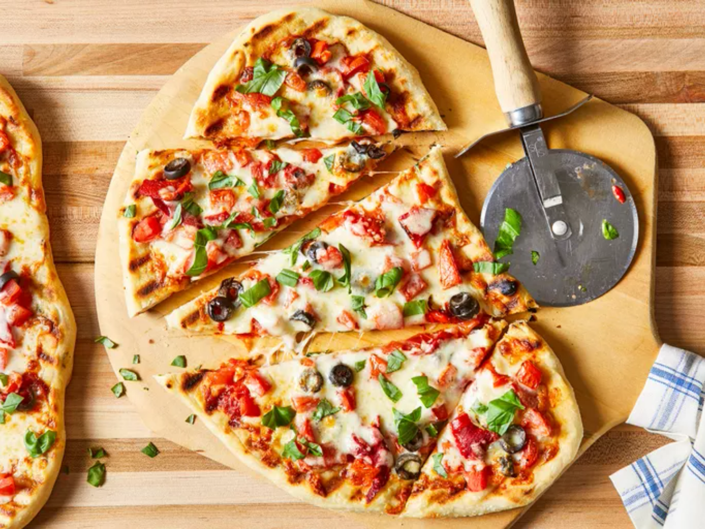

Pizza On The Grill

How to Make Pizza on the grill
You'll find a detailed ingredient list and step-by-step instructions in
the grilled pizza recipe below, but let's go over the basics:
Grilled Pizza Toppings
This grilled pizza is topped with tomato sauce, tomatoes, black olives,
roasted red peppers, mozzarella cheese, and fresh basil. Of course, you
can use whatever toppings you like!
How to Grill Pizza
Here’s a brief overview of what you can expect when you make homemade
pizza on the grill:
- Make the dough
- Make the garlic oil, then brush it onto the grill grates.
- Shape the dough and place it on the hot grill.
- Flip the crust and brush with oil.
-
Top the pizza however you like, close the lid, and cook until the cheese
melts.
Ingredients
Pizza Dough:
- 1 cup warm water (110 degrees F/45 degrees C)
- 1 (.25 ounce) package active dry yeast
- 1 pinch white sugar
- 3 ⅓ cups all-purpose flour
- 1 tablespoon olive oil
- 2 teaspoons kosher salt
- 2 cloves garlic, minced
- 1 tablespoon chopped fresh basil